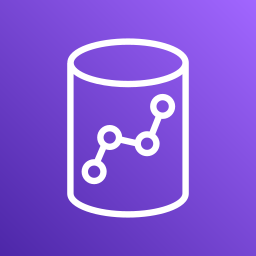

Duckle is an open-source ETL platform for teams who want their pipelines running on their own infrastructure. Author on a canvas, in Python or in SQL, then ship the same file to your own server or cloud account: duckle-runner serve runs it headless on a schedule, in Docker or on a box you own, with a web console, roles and an audit trail. Every pipeline is one file in git, so it outlives whoever wrote it. It runs on EC2, EKS or a box you own and uses every core you give it, so a bigger instance is a faster pipeline: 96 million rows out of Postgres to Parquet in 39.9s. No vendor cloud, no per-row billing, no lock-in.
Files, databases, warehouses, object stores, streaming brokers, SaaS APIs, NoSQL and vector DBs. These work today, not a coming-soon list.





Drag sources, transforms, validators and sinks onto a canvas and wire them together. The visual Map editor joins a main input to up to three lookups with per-output typed expressions and an inline filter. Every node still compiles to readable SQL you can inspect in the Plan tab.
Execution runs through DuckDB - vectorized and columnar. Branches fan out across your CPU cores automatically. Every run reports per-node status, row counts, timings and a live preview, so you see exactly what happened and where.

Upsert into Snowflake, BigQuery or Postgres on a schedule, with change data capture and delete propagation.

Salesforce, HubSpot, Stripe, GitHub, Jira and generic REST / GraphQL / OData - normalized into rows you can join.

Glob S3 / GCS / Azure, read Parquet, Iceberg, Delta and DuckLake, and write Hive-partitioned output at native speed.

The assistant runs Qwen 2.5 Coder in-process through llama.cpp - no API key, no vendor cloud. Ask in plain English; Duckie streams a valid pipeline and drops positioned, wired nodes onto the canvas. The same six AI transforms prep data for RAG, all offline.
Crunch a billion-row Parquet plus SQLite and ADBC dimensions locally, and upsert only the aggregate into Snowflake.
100,000 changes mirrored into DuckDB with upsert and delete propagation, exactly-once on success.
5 million rows loaded on the first run; later runs read only rows past the saved watermark.
 Connecting the dots in the DuckDB ecosystem
Connecting the dots in the DuckDB ecosystem
Every pipeline compiles to SQL and runs through DuckDB. Duckle sits in the ingestion and transformation layer alongside tools like dlt, dbt and Evidence, and reads the wider family natively: DuckLake tables, MotherDuck, the Quack protocol, and the community extensions.
Duckle is an independent, open-source project by SlothFlowLabs. It builds on the DuckDB engine but is not part of, affiliated with, or endorsed by DuckDB Labs or MotherDuck.
Yes. Duckle is open source under MIT or Apache-2.0. There is no per-row, per-connector, or per-seat billing, and nothing to self-host or operate.
Duckle runs on DuckDB, an embedded columnar engine. Visual pipelines compile to SQL and execute locally at native DuckDB speed, with no external warehouse or server in the loop.
It needs no vendor cloud and no account. Where it runs is yours to choose: author on a canvas, in Python or in SQL, then deploy the same file to a server or a cloud account you control, where duckle-runner serve runs it headless on a schedule with a web console, roles and an audit trail. Docker, EC2, ECS, EKS, Azure and Google Cloud are documented, and there is no telemetry at either end. It reads from and writes to cloud systems whenever you want; it just never hands your data to somebody else's platform.
Duckle ships 385 components, 367 available today, spanning sources, transforms, sinks, data-quality checks, control-flow nodes, and code runners for databases, warehouses, lakehouses, object storage, streaming, NoSQL, and SaaS APIs.
Yes. Duckle runs dbt on DuckDB with a visual GUI, using a fast build engine by default and falling back to dbt-core when needed, so you can build, test, and schedule dbt projects without leaving the studio.
Yes. Duckie is an on-device AI assistant that generates pipelines from plain English with no API key and no telemetry. Duckle also ships an MCP server so external AI agents can list, generate, validate, and run pipelines.
Duckle is a free, open-source ETL/ELT tool that covers similar ground to hosted platforms like Fivetran and Airbyte, but runs locally. It moves data across 190 sources and destinations with no per-row, per-connector, or per-seat billing and nothing to host or operate. Pipelines are built visually or from plain English and compile to readable DuckDB SQL.
Yes. Duckle compiles pipelines to SQL and runs them on DuckDB, so there is no external warehouse to buy and no per-row bill. Deploy them to a server or cloud account you own and duckle-runner serve schedules them headless on hardware you provision, using every core you give it, so a bigger instance is a faster pipeline. It suits air-gapped, on-premise and compliance-sensitive work, and it still reads from and writes to cloud systems whenever you want.
A local-first ETL tool builds and runs pipelines on infrastructure you control rather than on a vendor's platform, so your data stays in your custody. Duckle applies that to production rather than only to the desktop: author on a canvas, in Python or in SQL, then deploy the same file to your own server or cloud account, where it runs headless on a schedule with a web console, roles and an audit trail. Every pipeline is one file in git, so it outlives whoever wrote it.
Airbyte focuses on hosted extract-and-load connectors and dbt focuses on SQL transformation. Duckle is one open engine that does extract, transform, and load together - write it in Python, wire it from connectors, or draw it on a canvas - and it runs dbt on DuckDB inside the same tool. One format, one engine, deployed on your own infrastructure rather than a vendor's, with no per-row billing.
There is no single best one; the honest answer depends on where the work runs. Airbyte and Meltano suit server-hosted extract and load. Apache Airflow orchestrates jobs rather than transforming data. dbt transforms data already inside a warehouse. Duckle is the option when you want the pipeline running on infrastructure you own: it covers extract, transform and load in one artifact, compiles to readable DuckDB SQL, and can run dbt models itself. It is free and dual-licensed MIT OR Apache-2.0, with no per-row or per-seat billing.
Talend Open Studio reached end of life on 31 January 2024 and its free downloads were withdrawn, so teams still running it need a migration path. Duckle covers the same ground for the visual-pipeline user: a canvas of sources, transforms and destinations, a tMap-style visual mapper for joins and expression mapping, control-flow nodes for branching and iteration, and scheduled or headless execution. The differences are that pipelines compile to readable SQL on DuckDB rather than generated Java, the whole thing is one desktop binary with no Studio install, and it is free under MIT OR Apache-2.0.
Yes. Duckle pipelines are built by dragging sources, transforms and destinations onto a canvas and wiring them together, with no code required for the common cases. You can also describe what you want in plain English to the built-in on-device assistant. Nothing is hidden: every node shows the SQL it compiles to, so a low-code pipeline and a hand-written one produce the same artifact and you can drop into SQL or Python for the parts that need it.
Read the rows into Arrow and write Parquet directly, rather than converting each value to text and parsing it back. Duckle's Oracle source does this: on a 1,466,723-row, 236-column table it completes in about 65 seconds, against about 68.6 seconds for python-oracledb with pyarrow doing the same job on the same machine and writing the same SNAPPY Parquet. Enabling Write directly from the source on the Parquet sink removes a second encode pass. Columns declared as a bare NUMBER are measured before the write so they get exact DECIMAL types rather than a lossy DOUBLE.
Yes, and it does not stop there. Author the pipeline on your own machine, then deploy the same file to infrastructure you own: duckle-runner serve runs it headless on a schedule in Docker, on EC2 or on Kubernetes, with a web console, roles and an audit trail. Going from authoring to scheduled production is a deploy, not a rewrite. No vendor cloud and no per-row billing at either end, which suits on-premise and compliance-sensitive work.
No. Pipelines execute in-process on DuckDB, on infrastructure you own - your server, your cloud account, or your workstation. There is no account, no telemetry and no phone-home, and Duckle makes no outbound calls of its own. The built-in AI assistant runs its model in-process and needs no API key, so describing a pipeline in plain English does not send your schema or data to a third party. Data leaves your infrastructure only when a pipeline you built explicitly writes to a remote destination.
Free and open source, dual-licensed MIT OR Apache-2.0. Windows, macOS and Linux. No account, no telemetry.
Or install just the CLI, for CI, cron and containers:
pip install duckle
About 20 MB, brings the DuckDB engine with it, and adds a Python API where pipelines are built as code and executed by DuckDB. See it on PyPI.
Or let an AI agent do it. Paste this prompt into Claude Code, Cursor or Codex:
Run uvx duckle quickstart to build my first pipeline and run it
Nothing installed first. The agent fetches Duckle and the DuckDB engine on demand, runs a real pipeline, then has 19 MCP tools: it discovers real connectors, compile-checks before anything runs, and returns column-level lineage.